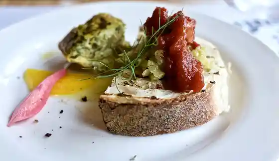
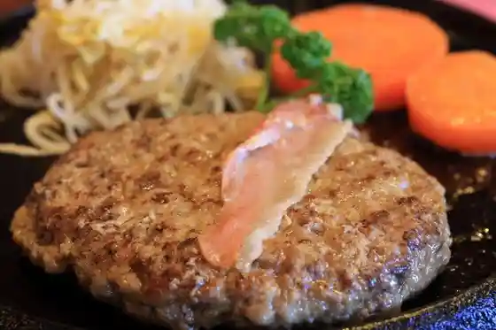
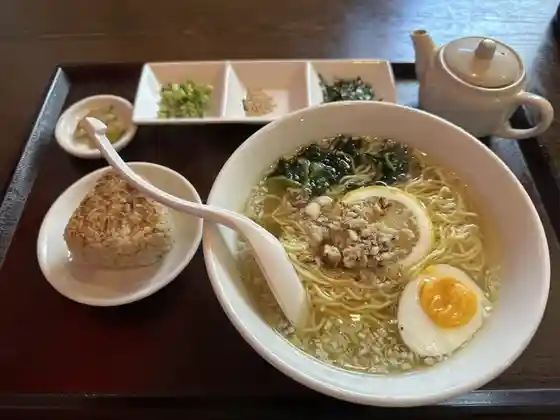
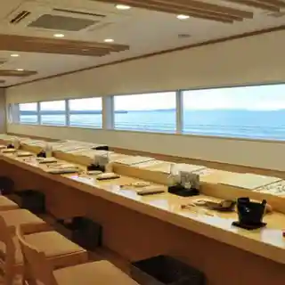
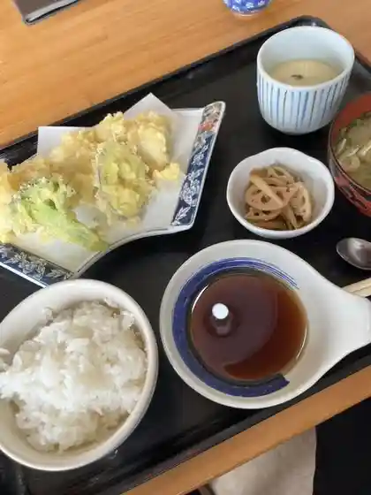
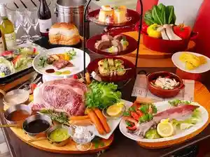
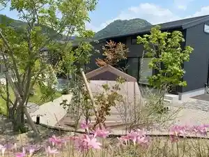
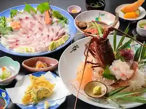
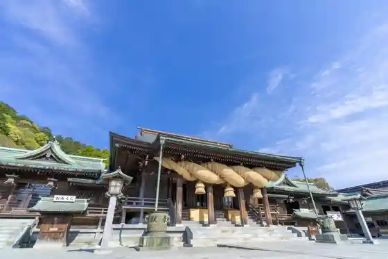

Fukutsu
Fukutsu · Fukuoka
Fukutsu
Highlighted on the Fukuoka map.
Dining
キッチン☆たなか
Kitchin ☆ Tanaka
福間ラーメンろくでなし 福津本店
Fukuma Raamen Rokudenashi Fukutsu Honten

アプテカ フレーゴ
Aputeka Fureego
究極の生パスタ ロゼッタ福津
Kyuukyoku No Nama Pasuta Rozetta Fukutsu

レストラン・ハイポー 福津店
レストラン・ハイポー 福津店

シュンシャン・春香
シュンシャン・春香

海の彩
Umi No Sai

活魚 大力
Ikeuo Dairiki
らー麺 味噌哲
Raa Men Miso Satoshi
いけす料理 磯太郎
Ikesu Ryouri Iso Tarou
うどんや 栖（すみか）
Udonya Sei ( Sumika )
となりのグリル
Tonarino Guriru
味のまるい
Aji Nomarui
空と海
Sora To Umi
福飯店 福津店
Fuku Hanten Fukutsu Mise
honu.cafe
honu.cafe
本格石窯パン工房 麦の香り 福間店
Honkaku Ishigama Pan Koubou Mugi No Kaori Fukuma Mise
マハロ
Maharo
かろまつ
Karomatsu
三光商店
Sankou Shouten
焼とり かい華
Yaki Tori Kai Hana
楽亭
Raku Tei
ENZO
ENZO
麺屋Oggi 宮司店
Oggi
DILLY DALLY
DILLY DALLY
カフェ ラナイ
Kafe Ranai
四季の味処 花靖
Shiki No Ajidokoro Hana Yasushi
ハイド パーク
Haido Paaku
漁師めし 来進
Ryoushi Meshi Rai Susumu
CALIFORNIA BURGER
CALIFORNIA BURGER
コネット
Konetto
ハンバーグ&とんこつカレーの店 洋食バル マカロニ食堂
Hanbaagu & Tonkotsu Karee No Mise Youshoku Baru Makaroni Shokudo
とんかつ双葉 イオンモール福津店
Tonkatsu Futaba Ionmooru Fukutsu Mise
ポムドテール 福津
Pomudoteeru Fukutsu
カナダキッチン
Kanadakitchin
飯屋 ニクトサカナ
Meshiya Nikutosakana
cafe de BoCCo
cafe de BoCCo
島屋
Shimaya
博多ラーメン ふくつまる
Hakata Raamen Fukutsumaru
Cafe SUN EFFECT
Cafe SUN EFFECT
山ちゃんうどん
Yama Chan'udon
アラペイザンヌ 福津店
Arapeizannu Fukutsu Mise
CAFE ALOHA
CAFE ALOHA
CHEZ のぶくに
CHEZ
開運堂
Kaiun Dou
居酒屋又兵衛
Izakaya Matabee
ベッカライ アロ
Bekkarai Aro
中華料理光竜
Chuukaryouri Hikari Ryuu
やきとり 陽
Yakitori You
コフレ
Kofure
大阪屋
Oosaka Ya
六蔵
Rokuzou
吉祥
Kichijou
森永屋
Morinaga Ya
和風旅館 華杏弥太楼
Wafuu Ryokan Hana Anzu Yata Rou
ウィズコーヒー
Uizukoohii
うみがめ
Umigame
四季酔亭・宮地館
四季酔亭・宮地館
まるにラーメン
Maruni Raamen
華カリー ジンジャー
Hana Karii Jinjaa
めん勝 若木台店
Men Kachi Wakagi Dai Mise
森のカフェ燦燦
Mori No Kafe San San
THE PARK
THE PARK
一風堂 イオンモール福津店
Ippuu Dou Ionmooru Fukutsu Mise
なちゅらる まんぷくや
Nachuraru Manpukuya
バーガーキング イオンモール福津店
Baagaakingu Ionmooru Fukutsu Mise
ケーキハウス・アン 福津店
ケーキハウス・アン 福津店
クロエとパン
Kuroe To Pan
定食や まるよし
Teishoku Ya Maruyoshi
酒場 いっこん
Sakaba Ikkon
寿し芳
Hisashi Shi Hou
焼肉なかむら
Yakiniku Nakamura
マル・マーレ
マル・マーレ
このみ
Konomi
カフェ・ビーチ・コンバー
カフェ・ビーチ・コンバー
本格インド料理 ニューサイノ
Honkaku Indo Ryouri Nyuusaino
本場インド料理 パビタラ 福津店
Honba Indo Ryouri Pabitara Fukutsu Mise
オ魚ソウル
O Sakana Souru
オレンジ
Orenji
人形屋食堂
Ningyou Ya Shokudo
そば処 海山
Soba Tokoro Umiyama
platenne
platenne
食堂海味
Shokudo Umi Aji
ARAN BAKERY
ARAN BAKERY
手作りジェラート ANZU
Tezukuri Jieraato Anzu
PAiN KOTi
PAiN KOTi
博多天ぷら たかお イオンモール福津店
Hakata Tenpura Takao Ionmooru Fukutsu Mise
おんどる 福津海岸通り店
Ondoru Fukutsu Kaigandoori Ri Mise
おさかな家族 イオンモール福津店
Osakana Kazoku Ionmooru Fukutsu Mise
小松屋
Komatsu Ya
ぎょうざの山八
Gyouzano Yama Hachi
博多わび助 福間店
Hakata Wabi Jo Fukuma Mise
ままや
Mamaya
焼肉はなやま
Yakiniku Hanayama
くつろぎ
Kutsurogi
和牛七輪焼肉 みむら
Wagyuu Shichirin Yakiniku Mimura
くつろぎ珈琲 宮司店
Kutsurogi Koohii Guuji Mise
漁師･割烹安徳丸
Ryoushi Ryoushi Kappou Antoku Maru
ケーキハウス・アン イオン福津店
ケーキハウス・アン イオン福津店
シトロン
Shitoron
チャイニーズレストラン 華都
Chainiizuresutoran Hana Miyako
kitchen ナカシマ
kitchen
創作旬彩鍋 玄杏
Sousaku Jun Sai Nabe Gen Anzu
ケーキハウス リッツ
Keekihausu Rittsu
結び屋 睛
Musubi Ya Sei
そらいろ 小さな食堂とうつわのお店
Sorairo Chiisa Na Shokudo Toutsuwanoo Mise
ニコビーチ
Nikobiichi
ベーカリー フクツリー
Beekarii Fukutsurii
K'smom cafe
K&39smom cafe
東筑軒 福間駅うどん店
Touchiku Ken Fukuma Eki Udon Mise
丸亀製麺 イオンモール福津店
Marugame Seimen Ionmooru Fukutsu Mise
いきいきあんずの里市
Ikiikianzuno Sato Shi
木かげ茶屋
Ki Kage Chaya
まるご屋
Marugo Ya
ひこぽぽ
Hikopopo
ポルケッタ
Poruketta
博多鯛焼き 鯛宝楽 福津本店
Hakata Taiyaki Ki Tai Takara Raku Fukutsu Honten
本場インド料理専門店 クシー
Honba Indo Ryouri Senmonten Kushii
カルビ家
Karubi Ie
海しゃん
Umi Shan
ZUPPA
ZUPPA
キッチン彩
Kitchin Sai
DAY TRIP
DAY TRIP
パティスリー エトワール
Pateisurii Etowaaru
北海道スープカレー和み
Hokkaidou Suupukaree Nagomi
美食 さわ田
Bishoku Sawa Ta
Crepe Guider
Crepe Guider
カラオケ喫茶ルピナス
Karaoke Kissa Rupinasu
若竹丸 福津店
Wakatake Maru Fukutsu Mise
ピア・サピド 福津店
ピア・サピド 福津店
自家焙煎珈琲豆屋 珈琲まつり
Jika Baisen Koohii Mameya Koohii Matsuri
権田
Gonda
ぢどり屋江藤
Jidori Ya Etou
Bintan
Bintan
Piilo
Piilo
ドライブイン しおはま
Doraibuin Shiohama
ミタニコーヒー
Mitanikoohii
カメリアカフェ
Kameriakafe
独楽
Koma
Peace comber
Peace comber
グランドーム福岡ふくつ
Gurandoomu Fukuoka Fukutsu
暖暮 若木台店
Dan Kure Wakagi Dai Mise
さち福や イオンモール福津店
Sachi Fuku Ya Ionmooru Fukutsu Mise
串家物語 イオンモール福津店
Kushi Ie Monogatari Ionmooru Fukutsu Mise
紅虎餃子房 イオンモール福津
Kouko Gyouza Bou Ionmooru Fukutsu
うどん海翔
Udon Kaishou
あんず お肉の工場直売所 福津店
Anzu O Niku No Koujou Chokubai Tokoro Fukutsu Mise
グランピング福岡 ぶどうの樹
Guranpingu Fukuoka Budouno Ki
Coffee bean's 遊悠
Coffee bean&39s
グラマーカフェ ミヤジハマ
Guramaakafe Miyajihama
蛸吉
Tako Kichi
八重食堂
Yae Shokudo
まいこのカレー
Maikono Karee
パン工房 コメコ ベーカリー
Pan Koubou Komeko Beekarii
ささ舟 津屋崎店
Sasa Fune Tsuyazaki Mise
きりんや麺
Kirinya Men
TOHOシネマズ 福津
TOHO
桜のキャトル
Sakura No Kyatoru
ファスアラメール・ギ・タカハシ
ファスアラメール・ギ・タカハシ
寿し神力
Hisashi Shi Shinriki
キャトルキュー
Kyatorukyuu
アイリーカフェ
Airiikafe
鉄板焼 平吉 津屋崎店
Teppanyaki Heikichi Tsuyazaki Mise
海のパン屋 バム
Umi No Pan Ya Bamu
氷ノ音
Koori No Oto
回転饅頭 ヨルちゃん
Kaitenmanjuu Yoru Chan
GOLDEN BREWERY
GOLDEN BREWERY
THE TERRACE
THE TERRACE
Patisserie&Cafe LapinD’or
Patisserie&Cafe LapinDor
リスドオル
Risudooru
サイゼリヤ イオンモール福津店
Saizeriya Ionmooru Fukutsu Mise
はま寿司 イオンモール福津店
Hama Sushi Ionmooru Fukutsu Mise
コメダ珈琲店 福間駅南店
Komeda Koohii Mise Fukuma Eki Minami Mise
築地銀だこ イオンモール福津店
Tsukiji Gin Dako Ionmooru Fukutsu Mise
スターバックスコーヒー イオンモール福津店
Sutaabakkusukoohii Ionmooru Fukutsu Mise
グリル&パフェ ピノキオ イオンモール福津店
Guriru & Pafe Pinokio Ionmooru Fukutsu Mise
リンガーハット 福岡福間店
Ringaahatto Fukuoka Fukuma Mise
リンガーハット イオンモール福津店
Ringaahatto Ionmooru Fukutsu Mise
ジョイフル 福岡福津店
Joifuru Fukuoka Fukutsu Mise
ミスタードーナツ イオンモール福津ショップ
Misutaadoonatsu Ionmooru Fukutsu Shoppu
ラ サラマンジェドゥ ミヤモト
Ra Saramanjiedou Miyamoto
Seaside Kitchen MIU
Seaside Kitchen MIU
一栄
Kazue
酒菜 よしみどり
Shusai Yoshimidori
今橋折箱店
Imahashi Oribako Mise
よし田
Yoshi Ta
パティスリー ケイツー
Pateisurii Keitsuu
ふか川
Fuka Kawa
大阪屋
Oosaka Ya
焼鳥ふくま
Yakitori Fukuma
アップルカフェ
Appurukafe
ベーカリージジ ジジのぱん屋
Beekariijiji Jiji Nopan Ya
福仙
Fuku Sen
とり正
Tori Sei
バー ノートン
Baa Nooton
polygon
polygon
上田清商店
Ueda Kiyoshi Shouten
MAKOYA
MAKOYA
本格炭火焼鳥 達磨
Honkaku Sumibi Yakitori Daruma
BUTCHER DADDY
BUTCHER DADDY
若武者
Jaku Musha
ウエスト 福津店
Uesuto Fukutsu Mise
ペッパーランチ イオンモール福津店
Peppaaranchi Ionmooru Fukutsu Mise
ビビン亭 イオンモール福津店
Bibin Tei Ionmooru Fukutsu Mise
サーティワンアイスクリーム イオンモール福津店
Saateiwan'aisukuriimu Ionmooru Fukutsu Mise
韓国フライドチキン・キンパ専門店 The.本物嗜好 Chicken Otte?
韓国フライドチキン・キンパ専門店 The.本物嗜好 Chicken Otte?
びっくりドンキー イオンモール福津店
Bikkuri Donkii Ionmooru Fukutsu Mise
シアトルズベストコーヒー イオンモール福津店
Shiatoruzubesutokoohii Ionmooru Fukutsu Mise
まるごのココロ
Marugono Kokoro
朝ごはん屋
Asagohan Ya
さかきや
Sakakiya
ひので家 イオンモール福津店
Hinode Ie Ionmooru Fukutsu Mise
神興
Kami Kyou
Creachair
Creachair
とり坊主 福津店
Tori Bouzu Fukutsu Mise
ルートコーヒー
Ruutokoohii
ハンバーグ ミネバーグ
Hanbaagu Minebaagu
早川豆腐店
Hayakawa Toufu Mise
あったか茶屋
Attaka Chaya
こまめよしこのかき氷
Komameyoshikonokaki Koori
KOMBUCHA NAGI
KOMBUCHA NAGI
宮
Miya
津屋崎千軒なごみカフェ
Tsuyazaki Sen Ken Nagomi Kafe
cafe & marine sports SUGAR
cafe & marine sports SUGAR
and+NEORA
andNEORA
竹乃屋 福間駅前店
Take No Ya Fukuma Ekimae Mise
やよい軒 福津店
Yayoi Ken Fukutsu Mise
マクドナルド 福津店
Makudonarudo Fukutsu Mise
しゃぶ菜 イオンモール福津
Shabu Na Ionmooru Fukutsu
果汁工房 果琳 イオンモール福津店
Kajuu Koubou Ka Rin Ionmooru Fukutsu Mise
タリーズコーヒー イオンモール福津店
Tariizukoohii Ionmooru Fukutsu Mise
唐十 イオンモール福津店
Tou Juu Ionmooru Fukutsu Mise
むっちゃん万十 福津店
Mutchan Man Juu Fukutsu Mise
デザート王国 イオンモール福津店
Dezaato Oukoku Ionmooru Fukutsu Mise
湖月堂 イオンモール福津店
Kogetsu Dou Ionmooru Fukutsu Mise
すき家 イオンモール福津店
Suki Ie Ionmooru Fukutsu Mise
如水庵 イオンモール福津店
Josui Iori Ionmooru Fukutsu Mise
プルネール 福津店
Puruneeru Fukutsu Mise
林檎堂 イオンモール福津店
Ringo Dou Ionmooru Fukutsu Mise
光カフェ
Hikari Kafe
藤くら
Fuji Kura
大磯
Ooiso
シャトレーゼ 福間店
Shatoreeze Fukuma Mise
想食家 むっしゅあずま
Sou Shoku Ie Musshuazuma
フレンドリー
Furendorii
めん六や 福岡福津店
Men Roku Ya Fukuoka Fukutsu Mise
セブンイレブン 福津中央5丁目店
Sebun'irebun Fukutsu Chuuou 5 Choume Mise
むすんでひらいて ルミエール福津店
Musundehiraite Rumieeru Fukutsu Mise
五番街
Gobangai
古小路
Ko Kouji
セブンイレブン 福津勝浦店
Sebun'irebun Fukutsu Katsuura Mise
きょう花
Kyou Hana
谷口観光いちご園
Taniguchi Kankou Ichigo Sono
陽夜江
You Yoru Kou
あるじゃんの森
Arujanno Mori
クリフ クバーノ
Kurifu Kubaano
焼肉酒家えん
Yakiniku Shuka En
田ぐり庵
Ta Guri Iori
ケンタッキーフライドチキン イオンモール福津店
Kentakkiifuraidochikin Ionmooru Fukutsu Mise
焼肉ウエスト 福間店
Yakiniku Uesuto Fukuma Mise
花玲
Hana Rei
おひさま唐揚げ
Ohisama Karaage
わくわく広場 イオンモール福津店
Wakuwaku Hiroba Ionmooru Fukutsu Mise
陣太鼓
Jin Taiko
からあげのふじや
Karaagenofujiya
からあげ 鷄好 福津店
Karaage Niwatori Kou Fukutsu Mise
からあげ鶏之介 宮司店
Karaage Niwatori Yuki Suke Guuji Mise
焼とり又兵衛
Yaki Tori Matabee
Korin Bagel
Korin Bagel
ふうが食堂
Fuuga Shokudo
茶房 ファー
Sabou Faa
ささ舟 福間店
Sasa Fune Fukuma Mise
博多とよ唐亭 ミスターマックス福津店
Hakata Toyo Tou Tei Misutaamakkusu Fukutsu Mise
シェリー
Shierii
炉ばた火の国
Ro Bata Hi No Kuni
アプテカ
Aputeka
ほっともっと 福津日蒔野店
Hottomotto Fukutsu Nichi Ji Yaten
ラ・パン 福津店
ラ・パン 福津店
クィックティー イオンモール福津店
Kuikkuteii Ionmooru Fukutsu Mise
PUBLIC THEATER
PUBLIC THEATER
Bar Corazon
Bar Corazon
HICHEESE
HICHEESE
CAFE ALICE
CAFE ALICE
Cafe ours cache-cache
Cafe ours cache-cache
花源
Hana Gen
アトリエ夢工房
Atorie Yumekoubou
宗像水軍海鮮食堂
Munakata Suigun Kaisen Shokudo
や台ずし 福間駅西口町
Ya Dai Zushi Fukuma Eki Nishiguchi Machi
無印良品 イオンモール福津店
Mujirushiryouhin Ionmooru Fukutsu Mise
福津夜珈琲
Fukutsu Yoru Koohii
ぎょうざの東天紅 福津販売所
Gyouzano Toutenkou Fukutsu Hanbaijo
ネオラログイン
Neoraroguin
ふれあい広場 ふくま
Fureai Hiroba Fukuma
明月堂 イオン福津店
Meigetsu Dou Ion Fukutsu Mise
腸活商店
Chou Katsu Shouten
金の小槌
Kin No Kozuchi
ほっともっと 津屋崎店
Hottomotto Tsuyazaki Mise
らー麺 かい華
Raa Men Kai Hana
豊村酒造
Toyomura Shuzou
ほっともっと 手光店
Hottomotto Te Hikari Mise
ファミリーマート JR福間駅店
Famiriimaato Jr Fukuma Eki Mise
民宿 まさご
Minshuku Masago
福津キンパ
Fukutsu Kinpa
生そば屋 Ichiei
Ichiei
筑前蒲鉾本舗
Chikuzen Kamaboko Honpo
ドッグライフ こたびより
Dogguraifu Kotabiyori
南部食堂
Nanbu Shokudo
とり新
Tori Shin
Hi×スタ
Hi X Suta
UMEYA BRAINERY イオンモール福津店
UMEYA BRAINERY
お好み焼き 一
O Konomi Yaki Ichi
薬膳カフェ&BAR 寿膳
&BAR
Ekadbo space
Ekadbo space
LAWSON 福津中央1丁目店
LAWSON 1
HarrY's Coffee
HarrY&39s Coffee
かき小屋ビーグロウ
Kaki Koya Biigurou
味自慢
Ajijiman
どらご
Dorago
セブンイレブン 福間海岸通り店
Sebun'irebun Fukumakaigan Touri Mise
イオン 福津店
Ion Fukutsu Mise
chez papa
chez papa
かずさや
Kazusaya
鉄板居酒屋 平吉 福間店
Teppan Izakaya Heikichi Fukuma Mise
おやつ工房りきゅう
Oyatsu Koubou Rikyuu
星のテラス
Hoshi No Terasu
城川珈琲
Shirokawa Koohii
万笑
Man Warai
ブルゴギ亭
Burugogi Tei
タナカタコス
Tanakatakosu
お食事処うしお
O Shokuji Tokoro Ushio
KANOA SPORTS
KANOA SPORTS
SUN EFFECT
SUN EFFECT
カフェ・カルディーノ
カフェ・カルディーノ
ローソン 福津花見が丘1丁目店
Rooson Fukutsu Hanami Ga Oka 1 Choume Mise
余暇
Yoka
やきとり大門
Yakitori Daimon
サンストン
Sansuton
セブンイレブン 福津若木台店
Sebun'irebun Fukutsu Wakagi Dai Mise
LAWSON 宗像若木台店
LAWSON
ゴリラ
Gorira
ぴえろ
Piero
ピザクック 福津店
Pizakukku Fukutsu Mise
唐揚げお華
Karaage O Hana
かき小屋パンタイバグース
Kaki Koya Pantaibaguusu
イオン 福津店
Ion Fukutsu Mise
セラヴィ
Seravi
セブンイレブン 福間駅南店
Sebun'irebun Fukuma Eki Minami Mise
猫ル百貨店
Neko Ru Hyakkaten
ミニストップ 東福間店
Minisutoppu Toufuku Kan Mise
焼鳥 炭匠
Yakitori Sumi Takumi
noriko crepe&sweets
noriko crepe&sweets
であい茶屋
Deai Chaya
アジアンバー ステア
Ajianbaa Sutea
Mahalo
Mahalo
Restaurant Hypor Fukutsu
Restaurant Hypor Fukutsu
Tennen Katsugyo No Mise Hanasho
Tennen Katsugyo No Mise Hanasho
Takaya Fukutsu Main Store
Takaya Fukutsu Main Store
Kaishan
Kaishan
Tochikuken Fukuma Udon
Tochikuken Fukuma Udon
Indian New Saino
Indian New Saino
Rosetta Fukutsu
Rosetta Fukutsu
Dopo
Dopo
Apple Cafe
Apple Cafe
Daichi No Udon Fukutsu
Daichi No Udon Fukutsu
Anzu no Sato Restaurant Furusato
Anzu no Sato Restaurant Furusato
Joyfull
Joyfull
Ringer Hut Aeon Mall Fukutsu
Ringer Hut Aeon Mall Fukutsu
Sushi Nakamura
Sushi Nakamura
Amami Kissa Wakatake
Amami Kissa Wakatake
Coco Ichibanya Plum Garden Hanamihigashi
Coco Ichibanya Plum Garden Hanamihigashi
Starbucks Coffee Aeon Mall Fukutsu
Starbucks Coffee Aeon Mall Fukutsu
Kentucky Fried Chicken Fukutsu Ten
Kentucky Fried Chicken Fukutsu Ten
Farmer s Vegetables and Gift From the Land Tonari No Grill
Farmer s Vegetables and Gift From the Land Tonari No Grill
Kokage
Kokage
Zakoya Aeon Mall Fukutsu
Zakoya Aeon Mall Fukutsu
Chateau
Chateau
Terrace on Waves Mal Mare
Terrace on Waves Mal Mare
Ethnic Tavern Enakbagus
Ethnic Tavern Enakbagus
Takao Aeon Mall Fukuzu
Takao Aeon Mall Fukuzu
Ringer Hut Fukuoka Fukuma
Ringer Hut Fukuoka Fukuma
Ichiraku Ramentsuyazaki
Ichiraku Ramentsuyazaki
Joyful Fukuoka Fukutsu Branch
Joyful Fukuoka Fukutsu Branch
Danbo Wakagidai
Danbo Wakagidai
Monsieur Azuma
Monsieur Azuma
Igokochi Dining Azu
Igokochi Dining Azu
Ohana Chaya
Ohana Chaya
Wakaba
Wakaba
Kadoya
Kadoya
Chinese Restauranttenshin
Chinese Restauranttenshin
Kisetsu Ryori to Sumibi Yakitori Hakata Wabisuke Fukuma
Kisetsu Ryori to Sumibi Yakitori Hakata Wabisuke Fukuma
Sushi Yoshi
Sushi Yoshi
Tatsunoya Ramen Ibuki Aeon Mall Fukutsu
Tatsunoya Ramen Ibuki Aeon Mall Fukutsu
Chang ke Aeon Mall Fukutsu
Chang ke Aeon Mall Fukutsu
Ramen Misotetsu
Ramen Misotetsu
Raw Buckwheat Azuma Fukuma
Raw Buckwheat Azuma Fukuma
Isaburo Bread Fukutsu
Isaburo Bread Fukutsu
Shunxiang
Shunxiang
Danke
Danke
Taiho Rakufukutsu Main Store
Taiho Rakufukutsu Main Store
Marimo No Udon
Marimo No Udon
Banshu Tonkatsu Futaba
Banshu Tonkatsu Futaba
Beer Publlc Restaurant Hyde Park
Beer Publlc Restaurant Hyde Park
Hana Curry Ginger
Hana Curry Ginger
Gojunimangoku Josuian Aeon Mall Fukutsu
Gojunimangoku Josuian Aeon Mall Fukutsu
Kaisen Honpo Donmaru Fukutsu
Kaisen Honpo Donmaru Fukutsu
Hyde Park
Hyde Park
Dosanko Ramen Fukuma
Dosanko Ramen Fukuma
Cattle of Sakura
Cattle of Sakura
Chidoriya Aeon Fukutsu
Chidoriya Aeon Fukutsu
Uotami Fukuma Higashiguchi Ekimae
Uotami Fukuma Higashiguchi Ekimae
Moa s Kirchen
Moa s Kirchen
Benitora Gyozabo AEON MALL Fukutsu
Benitora Gyozabo AEON MALL Fukutsu
Beach Cafe Stay Bocco Villa
Beach Cafe Stay Bocco Villa
Sushi Shinriki
Sushi Shinriki
Fuji Sushi
Fuji Sushi
Cafe Lanai
Cafe Lanai
Burger Cafe Fleur Monmon
Burger Cafe Fleur Monmon
Meisuien
Meisuien
Ramen Tsuten
Ramen Tsuten
Pizza Pocket Fukuma
Pizza Pocket Fukuma
Umi Bakery
Umi Bakery
Argent No Mori
Argent No Mori
Ueda Confectionery
Ueda Confectionery
Sushifutoshi
Sushifutoshi
Udon Izakaya Kyo
Udon Izakaya Kyo
Western Bal Macaroni Dininig Room
Western Bal Macaroni Dininig Room
Chinese Koryu
Chinese Koryu
Mountain of Dumplings Eight
Mountain of Dumplings Eight
Jojoya
Jojoya
Sadakosan
Sadakosan
Yoshokuya Pallet
Yoshokuya Pallet
Hashimoto Shoten
Hashimoto Shoten
Gallery Kura
Gallery Kura
Irie Cafe
Irie Cafe
KollaBo Korabo Aeon Mall Fukutsu
KollaBo Korabo Aeon Mall Fukutsu
Marutani
Marutani
Friendly
Friendly
Jonetsu Hormone Fukuoka Fukuma Bar
Jonetsu Hormone Fukuoka Fukuma Bar
Grilled Beef Nakamura
Grilled Beef Nakamura
Pepper Lunch Aeon Mall Fukutsu
Pepper Lunch Aeon Mall Fukutsu
Ippudo Aeon Mall Fukutsu
Ippudo Aeon Mall Fukutsu
Hamazushi Aeon Mall Fukutsu
Hamazushi Aeon Mall Fukutsu
Cafe Restaurant Dentdelion
Cafe Restaurant Dentdelion
Izakaya Gokan
Izakaya Gokan
Bar Good for Nothing
Bar Good for Nothing
Koryori Ushimatsu
Koryori Ushimatsu
Francois Fukuma Ekimae
Francois Fukuma Ekimae
Yataizushi Fukumaekinishiguchi
Yataizushi Fukumaekinishiguchi
Sushi Marche
Sushi Marche
Jin Daiko
Jin Daiko
Miyaji Shokudo You Club
Miyaji Shokudo You Club
Uokatsu
Uokatsu
Ajisai Bento
Ajisai Bento
Kikuchiken
Kikuchiken
Koshoji
Koshoji
Mompei
Mompei
Motsunabe Tokuchan
Motsunabe Tokuchan
Chip
Chip
Koryori Hiro
Koryori Hiro
Wakamusha
Wakamusha
Ushimatsu
Ushimatsu
Sagiri
Sagiri
Ajiichiri
Ajiichiri
Little Naples
Little Naples
Pasteria Buono
Pasteria Buono
Star Beach
Star Beach
Lupine
Lupine
Ganbattei Fukutsu
Ganbattei Fukutsu
Fukagawa
Fukagawa
Kokozo
Kokozo
Moppoen
Moppoen
Kurumi
Kurumi
Izakaya Nidaime Ichimi
Izakaya Nidaime Ichimi
Pierrott
Pierrott
Shelly
Shelly
Izakaya Mansho
Izakaya Mansho
Bar Norton
Bar Norton
Tokinone
Tokinone
Sorato Cafe
Sorato Cafe
Nampu Shuka Paikaji
Nampu Shuka Paikaji
Conami
Conami
Izakaya Jan Jan
Izakaya Jan Jan
Hiyoko
Hiyoko
Mutsuzo
Mutsuzo
Tarts Quiche Cafe Bottega Cou
Tarts Quiche Cafe Bottega Cou
Fukujyuya
Fukujyuya
Fujinaka
Fujinaka
Lof
Lof
Sunpia Fukuoka Restaurant
Sunpia Fukuoka Restaurant
Chidoriya Fukuma
Chidoriya Fukuma
Rakuraku
Rakuraku
Kitchen Ramputei Fukutsu
Kitchen Ramputei Fukutsu
Ihara Pastry
Ihara Pastry
Ippoissho Kamiya KIssho
Ippoissho Kamiya KIssho
Camellia Cafe
Camellia Cafe
Kakuuchi Hakata Ichibandori Fukutsu
Kakuuchi Hakata Ichibandori Fukutsu
Pizza Cooc Fukutsu
Pizza Cooc Fukutsu
Stay
ぶどうの樹ふくつ海岸通り 光の海 ホテル＆リゾート 波の音
Budouno Ki Fukutsu Kaigandoori Ri Hikari No Umi Hotel & Rizooto Nami No Oto

ふぁーむ２
Faamu 2

華杏（はなあんず）弥太楼
Hana Anzu ( Hanaanzu ) Yata Rou

Sights
Kagami no Umi
Hikari no Michi Yuhi no Festival
Miyaji Gaku Shrine

Koi no Ura Coast
Kosumosu
Fukuma Beach
Tsuyazaki Sen Ken Nagomi
Niihara Yatsu Yama Kofun Gun
Togo Shrine
O Sakana Center Umigame
Cheriiberu Tourist Farm Fukutsu
Miyaji Hama Beach
Tsuyazaki Sen Ken Minzoku Kan Ai no Ie
Fukutsu Sogo Sports Park Namazu no Sato
Tsuyazaki Beach
Chikuzen Tsuyazaki Ningyo Ko Bo
Fureai Hiroba Fukuma
Tsuyazaki Coast